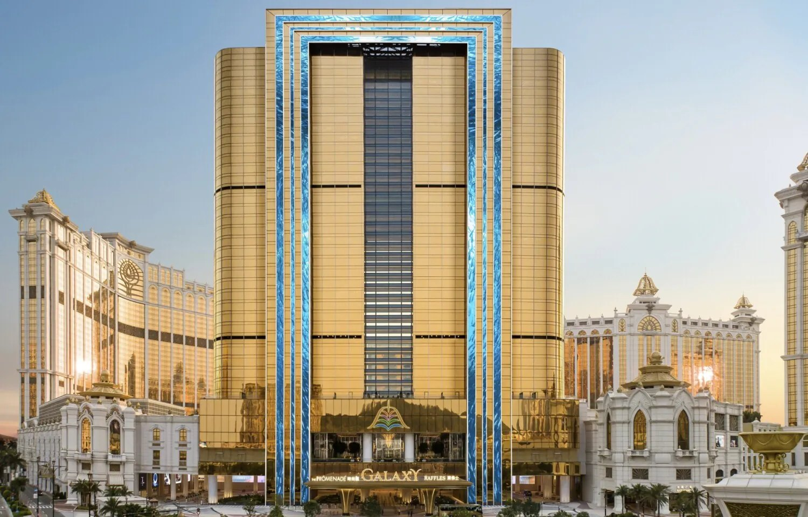
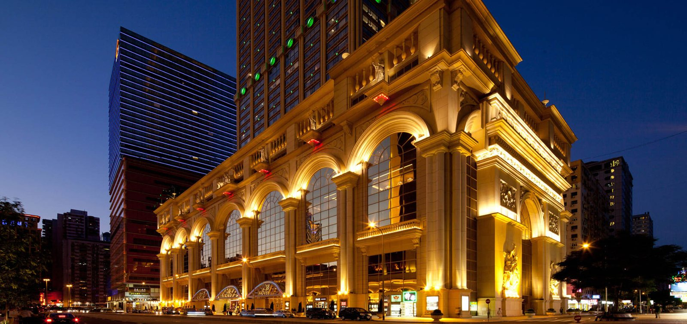
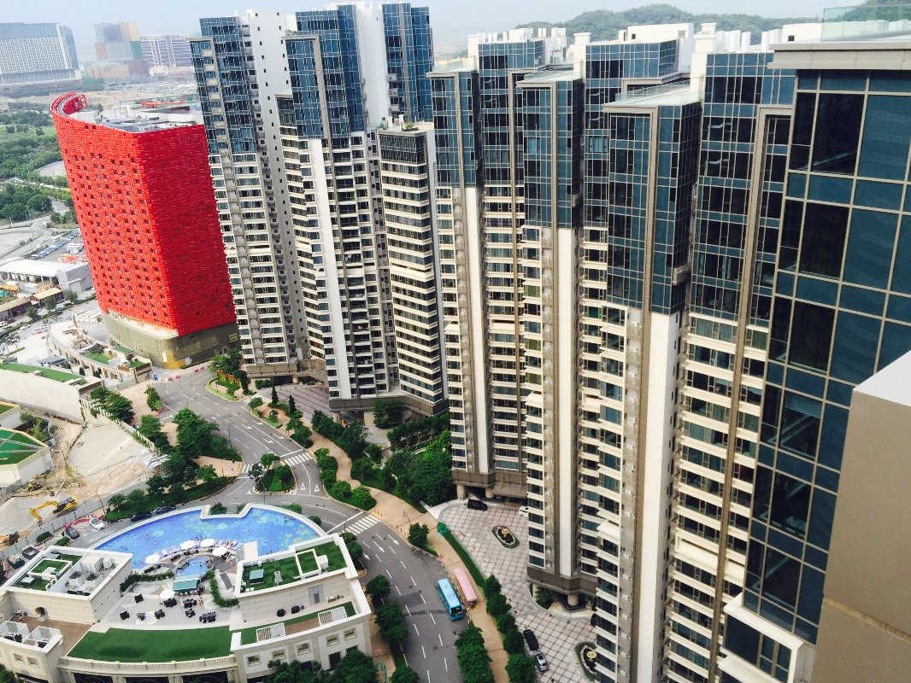
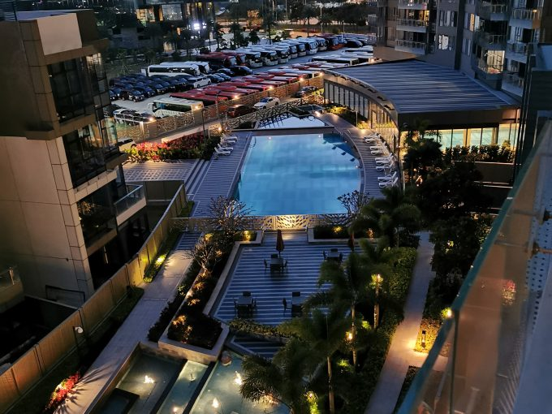

Macau's hotels never close. Their bathrooms run hot showers around the clock, in steam, splashes and daily housekeeping — the hardest working conditions a television can face. Across eight of the city's landmark hotel and residential projects, the bathroom TVs and mirror TVs trace back to one team: Oolaa, its predecessor brand JSA, and the same factory that manufactured bathroom TVs for Macau homes as early as 2006 — 3,623 sets in total.

Raffles at Galaxy Macau — 560 Oolaa mirror TVs. Photo: Accor Press.
Key facts
- 3,623 bathroom TVs / mirror TVs across Macau projects since 2006 — including 1,835 under our own brands (Oolaa + JSA)
- 8 landmark projects: Raffles at Galaxy Macau, Grand Lisboa Palace, L'Arc Macau, South & Park Residence, Oscar Crescent, The Paragon, Regency Park
- IP65 waterproof rating on our bathroom TVs
- 25,000+ bathroom TVs delivered across Hong Kong, Macau and overseas projects
- Macau track record since 2006 — Regency Park, Taipa (as manufacturer, Samsung-badge production)
The eight projects
| Project | Product | Sets |
|---|---|---|
| Regency Park (濠庭都會), Taipa — 2006–2008, as manufacturer (Samsung badge) | Bathroom TV | 1,788 |
| Raffles Hotel, Galaxy Macau | Mirror TV | 560 |
| South Residence, Kingform South Shore (金峰南岸・禦南峰) | Mirror TV + Bath TV | 712 |
| Park Residence, Kingform (金峰南岸・尚譽) | Mirror TV | 120 |
| Oscar Crescent (星玥), Taipa | Bath & Kitchen TV | 299 |
| The Paragon (天鑽), Taipa | Mirror TV + Bath TV | 70 |
| Le Royal Arc (L'Arc Macau) (凱旋門) — JSA, 2009 | Bathroom TV | 62 |
| Grand Lisboa Palace (上葡京), Cotai | Mirror TV | 12 |
| Total — Macau (own brands Oolaa + JSA: 1,835) | 3,623 |

L'Arc Macau (Le Royal Arc) — JSA bathroom TVs, 2009. Photo: Wong & Tung.
Grand Lisboa Palace, Cotai. Photo: Hoje Macau.
Why waterproofing decides everything: IP64 vs IP65
A bathroom TV rarely dies because of its screen. It dies at the seal — steam and water get in, month after month, until the electronics give up. That is why the IP rating matters more than any picture specification, and why it pays to read it properly.
The two digits mean two different things
An IP code (Ingress Protection, IEC 60529) is two separate scores, not one:
| First digit — dust & solids (0–6) | Second digit — water (0–9) | |
|---|---|---|
| What it tests | How well the enclosure keeps out solid objects and dust | How well the enclosure keeps out water |
| Top / key levels | 6 = completely dust-tight | 4 = splashing water · 5 = water jets · 6 = powerful jets · 7 = temporary immersion |
So the first digit in IP64 and IP65 is identical — both are fully dust-tight. The whole difference is the second digit: 4 versus 5.
| IP64 | IP65 | |
|---|---|---|
| Water test | Splashing water from any direction | Water jets (6.3 mm nozzle) from any direction |
| In a real bathroom | Survives splashes and steam in the air | Also survives a shower head spraying straight at it, and housekeeping spray-cleaning |
| Typical use | Many consumer "bathroom" gadgets and splash-proof mirrors | Specified for hotel and project bathrooms that are cleaned and used hard, every day |
A splash and a jet are not the same thing. A jet drives water at the seals with pressure — exactly what happens when a shower is aimed at the screen, or when hotel housekeeping hoses down a bathroom. IP65 is the level where the seal is proven against that. One honest footnote: the IP test measures liquid water, not vapour — what keeps a TV alive in steam for a decade is a fully sealed enclosure plus a built-in defogger, and IP65 is the rating that proves the sealing discipline behind both.
Our bathroom TVs are built to IP65 for a simple reason: our proof is installed, not promised. 1,835 own-brand sets are working in Macau bathrooms today — including 24-hour casino hotels — out of more than 25,000 bathroom TVs we have delivered across Hong Kong, Macau and overseas projects. When a developer asks how reliable our waterproofing is, the answer is a count of working bathrooms, not a lab claim.

South Residence, Kingform South Shore — 712 sets. Photo: Centaline Macau.

Oscar Crescent, Taipa — 299 bath & kitchen TVs. Photo: Prudential Macau.
It started before the brand
Our Macau bathroom story begins earlier than Oolaa. At Regency Park (濠庭都會) in Taipa — 1,788 residences completed between 2006 and 2008 — our founder Joe Lee was the manufacturer behind the bathroom TVs — all 1,788 of them, one for every home: the sets were his own production, and he arranged with Samsung to use their brand, so the TVs shipped under the Samsung badge. In 2009, supply continued under JSA, the predecessor brand of Oolaa, at the newly opened L'Arc Macau for the New World group. JSA became Oolaa; the team, the factory discipline and the Macau project list kept growing. Same lesson from day one: a bathroom TV has to outlast the renovation cycle around it.
Frequently asked questions
Who is the largest bathroom TV supplier in Macau?
Oolaa's team — under its own brands Oolaa and JSA, and earlier as the manufacturer behind a Samsung-badge production run — accounts for 3,623 bathroom TVs across eight landmark Macau projects since 2006, including Raffles at Galaxy Macau, Grand Lisboa Palace and Regency Park. It is the largest published project track record of any specialist bathroom TV supplier in Macau.
Which Macau hotels and residences have Oolaa bathroom TVs?
Raffles Hotel at Galaxy Macau (560 mirror TVs), South Residence at Kingform South Shore (712), Park Residence (120), Oscar Crescent in Taipa (299 bath & kitchen TVs), The Paragon in Taipa (70), L'Arc Macau (62, under JSA in 2009) and Grand Lisboa Palace (12). The team's Macau work began at Regency Park, Taipa — 1,788 bathroom TVs manufactured for the development in 2006–2008, shipped under the Samsung badge.
What is the difference between IP64 and IP65?
The two digits are separate scores: the first is dust protection, the second is water. Both IP64 and IP65 are fully dust-tight (6). The difference is water: 4 means splash-proof, 5 means the enclosure also withstands direct water jets — a shower aimed at the screen, or spray-cleaning. For hotel and project bathrooms, IP65 is the safer specification.
Why does a bathroom TV need IP65?
Because bathrooms attack the seal, not the screen: steam, splashes and pressurized spray during cleaning, every day for years. IP65 proves the enclosure keeps water jets out; combined with a sealed build and a defogger, it is what lets a bathroom TV outlast the renovation cycle.
What is JSA, and how is it related to Oolaa?
JSA is the predecessor brand of Oolaa. The same team supplied bathroom TVs under JSA — including L'Arc Macau in 2009 — before continuing under the Oolaa brand.
We are planning a hotel or residential project in Macau. When should bathroom TVs be specified?
At design stage, before bathroom wall build-ups are fixed — mirror TV sizes, power and signal positions are far cheaper to plan than to retrofit. Talk to us early: we are factory-direct and build to project specification.
Planning a hotel or residential project in Macau or Hong Kong? Talk to the team behind 3,623 Macau bathroom TVs and 31,000+ installations.